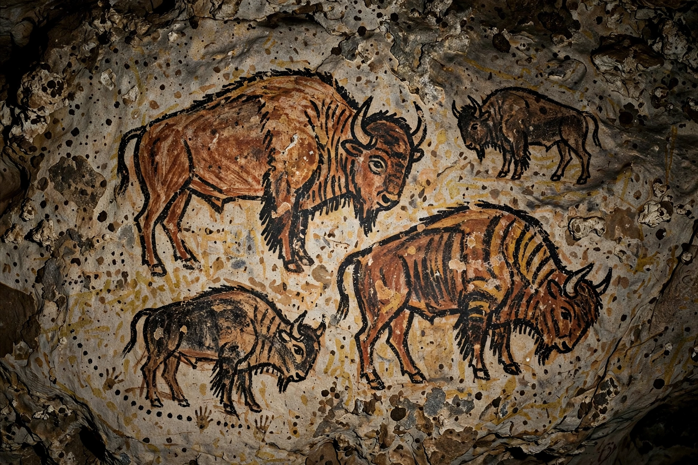

Paleolithic
| Paleolithic | |
|---|---|
| Period | c. 3.3 million years ago – c. 11,650 years ago |
| Also called | Old Stone Age |
| Key developments | Stone tools, control of fire, language, art |
| Followed by | Mesolithic / Neolithic |

The Paleolithic or Palaeolithic — the "Old Stone Age" — is the earliest and longest period of human prehistory, spanning from the first stone tools about 3.3 million years ago to the end of the last ice age around 11,650 years ago. It covers nearly all of the Stone Age and most of the existence of the genus Homo.
Subdivisions
The Lower Paleolithic saw the Oldowan and Acheulean tool industries, the dispersal of Homo erectus from Africa, and the mastery of fire. The Middle Paleolithic (c. 300,000–50,000 years ago) was dominated by Neanderthals in Europe and early Homo sapiens in Africa, with prepared-core (Levallois) techniques. The Upper Paleolithic (c. 50,000–12,000 years ago) brought blade tools, bone and antler working, personal ornament, figurines such as the Venus of Willendorf, and spectacular cave paintings at sites like Lascaux and Chauvet.
Way of life
Paleolithic people were hunter-gatherers living in small, mobile bands, exploiting a wide range of game and plant foods. By the late Upper Paleolithic humans had spread to every continent except Antarctica, domesticated the dog, and developed tailored clothing, sewn shelters and long-distance exchange of materials such as obsidian and shell.
End of the period
The warming at the end of the Pleistocene, the extinction of much of the megafauna, and the beginnings of agriculture in the Neolithic brought the Paleolithic way of life to a close, though hunter-gatherer societies persisted in many regions into historical times.
See also: Stone tool, Neanderthal, Cave painting, Hunter-gatherer.